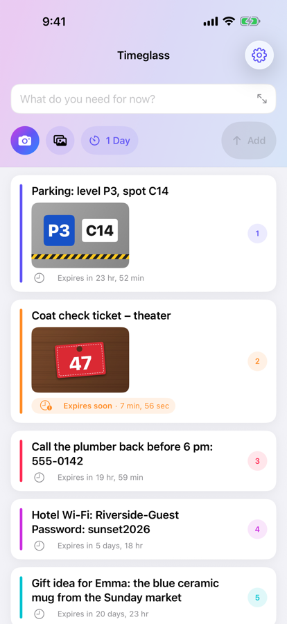

Orbital Puck
visionOSA space café, one table and nine opponents. A little world to step into for a match.
Engineer, maker & storyteller
I draw stories, create apps and build systems. Different worlds, the same impulse: to give shape to what I imagine.
It all starts with a line

The same joy of making. Whatever the medium.
01 / Selected work
Personal and collective projects, from comic panels to immersive worlds. A few ways into the things I love making.
A space café, one table and nine opponents. A little world to step into for a match.


Characters, places, and time unfolding between panels. Another way of bringing a world to life.

Arcade with a new dimension. Protect six cities, anticipate trajectories, and aim in space.

Keep it.A Wi-Fi code, a parking spot, a ticket. Keep information just as long as you need it.

Turn the words you encounter into a personal collection. Learn, listen and review at your own pace.

Engineering for an environmental purpose: orchestrating energy for residential communities.
Ideas you can actually use.
Find my projects on GitHubWakanda (4D) · A formative experience
I contributed to Wakanda, a platform bringing together a JavaScript server, an object database, a client framework and a development studio. An experience I loved: helping other developers bring applications to life more easily.
Developer, then Lead Developer and Project Manager
02 / Engineering, in the real world
Head of Software · Homsphere
At Homsphere, I lead the team turning an environmental ambition into an energy management system: bringing solar generation, batteries, electric vehicles and homes together to increase energy independence.
Energy at neighbourhood scale
Technical direction, backend and frontend architecture: building a coherent whole, from interfaces to the cloud.
Data, real-time systems, IoT, AI prediction and optimisation: making software work with physical energy systems.
Support the team through complex problems and stay close to the code and the field. Engineering for an environmental purpose.
03 / By hand
A notebook to explore, from the first drawing to the latest pages. Open a page, move to the next, and let the story unfold.
 01 / Colour illustration
01 / Colour illustration
 02 / Page 2
02 / Page 2
 03 / Page 3
03 / Page 3
 04 / Page 4
04 / Page 4
 05 / Page 5
05 / Page 5
 06 / Page 6
06 / Page 6
 07 / Page 7
07 / Page 7
 08 / Page 8
08 / Page 8
 09 / Page 9
09 / Page 9
 10 / Page 10
10 / Page 10
 11 / Page 11
11 / Page 11
 12 / Page 12
12 / Page 12 13 / Page 13
13 / Page 13
 14 / Page 14
14 / Page 14
 15 / Page 15
15 / Page 15
 16 / Page 16
16 / Page 16
 17 / Page 17
17 / Page 17
 18 / Page 18
18 / Page 18
 19 / Page 19
19 / Page 19
 20 / Page 20
20 / Page 20
 21 / Page 21
21 / Page 21
 22 / Page 22
22 / Page 22
 23 / Page 23
23 / Page 23
 24 / Page 24
24 / Page 24
 25 / Page 25
25 / Page 25
 26 / Page 26
26 / Page 26
 27 / Page 27
27 / Page 27
 28 / Page 28
28 / Page 28
 29 / Page 29
29 / Page 29
 30 / Page 30
30 / Page 30
 31 / Page 31
31 / Page 31
 32 / Page 32
32 / Page 32
 33 / Page 33
33 / Page 33
 34 / Page 34
34 / Page 34
 35 / Page 35
35 / Page 35
 36 / Page 36
36 / Page 36
 37 / Page 37
37 / Page 37
 38 / Page 38
38 / Page 38
 39 / Page 39
39 / Page 39
 40 / Page 40
40 / Page 40
 41 / Page 41
41 / Page 41
 42 / Page 42
42 / Page 42
 43 / Page 43
43 / Page 43
 44 / Page 44
44 / Page 44From a pencil line to a line of code, I find the same pleasure: watching something take shape.
04 / The connecting thread

I don’t really separate what I create for myself from what I build at work. Drawing, apps and engineering feed into one another.
I like turning an idea into something real: a story you can read, a game you can step into, a tool that makes everyday life easier, a system that acts on the physical world. This notebook brings those facets together. You can find the stages of my career on LinkedIn.
The next chapter starts with a conversation
Apple Vision Pro · visionOS
A space café, a puck and nine opponents, each with their own personality, world and musical atmosphere. Orbital Puck is a native single-player game for Apple Vision Pro: guide your paddle with your hand, or with gaze and pinch. First to seven points wins. A project where characters, interaction and programming meet in the same space.

visionOS Simulator capture, from the project website.
Comics
Drawing is another way of building. Here, I work with characters, framing and the rhythm between panels. This selection features excerpts from my comic project: black-and-white pages and a colour illustration. A place for storytelling, observation, and letting images find their way.
View the full page ↗
Apple Vision Pro · visionOS
A miniature battlefield in your own space. In Bastion Protocol, protect six cities with three batteries, placing each interception at the right point in the sky. The Apple Vision Pro game features free aim in three dimensions, moving turrets and spatial audio. Geometry becomes a playground.
The browser preview is an earlier version of the game; the Vision Pro experience is more complete.
Everyday tool · App Store
Some information only needs to stay for a few hours or days: a Wi-Fi code, a parking spot, a ticket photo. Timeglass gives notes and photos a lifetime, then clears them automatically when their time is up. Renew, share, and optionally get a reminder before expiry. No account, ads or analytics; syncing uses your own iCloud.
Language learning · App Store
Lexilo turns the words and expressions you encounter into a personal collection, organised in lists. Flashcards, dictation and spaced repetition help you remember them. Learn languages side by side, with audio at normal or slower speed. Your data stays on your device and in your own iCloud, without an account, ads or analytics.